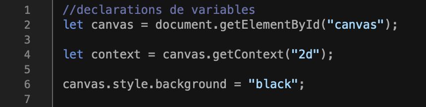
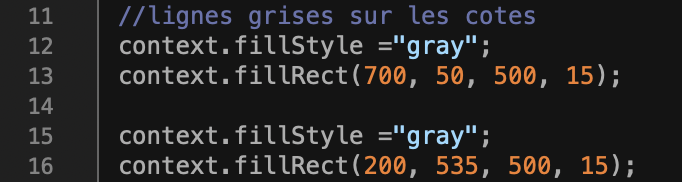
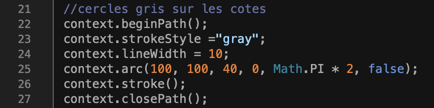
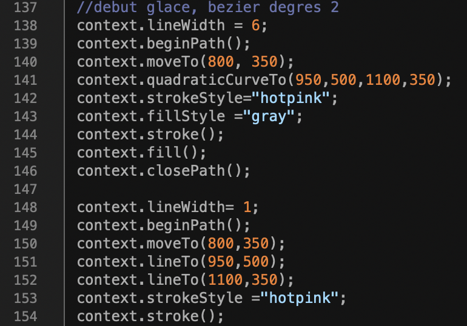
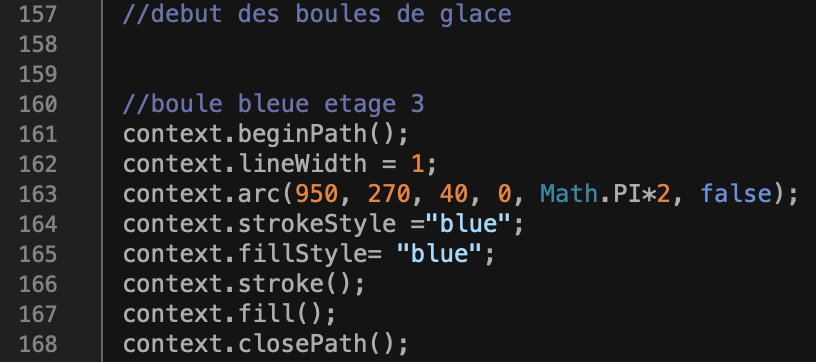
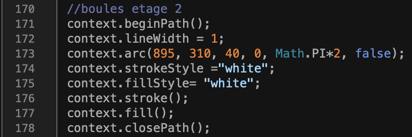
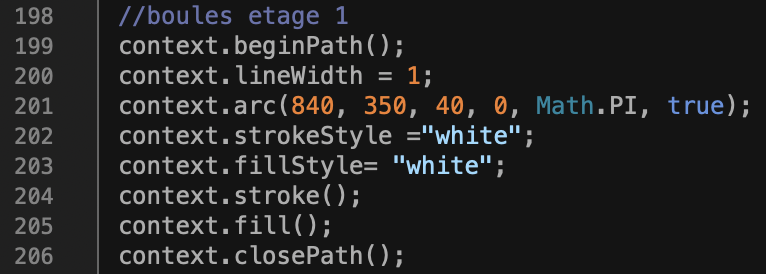
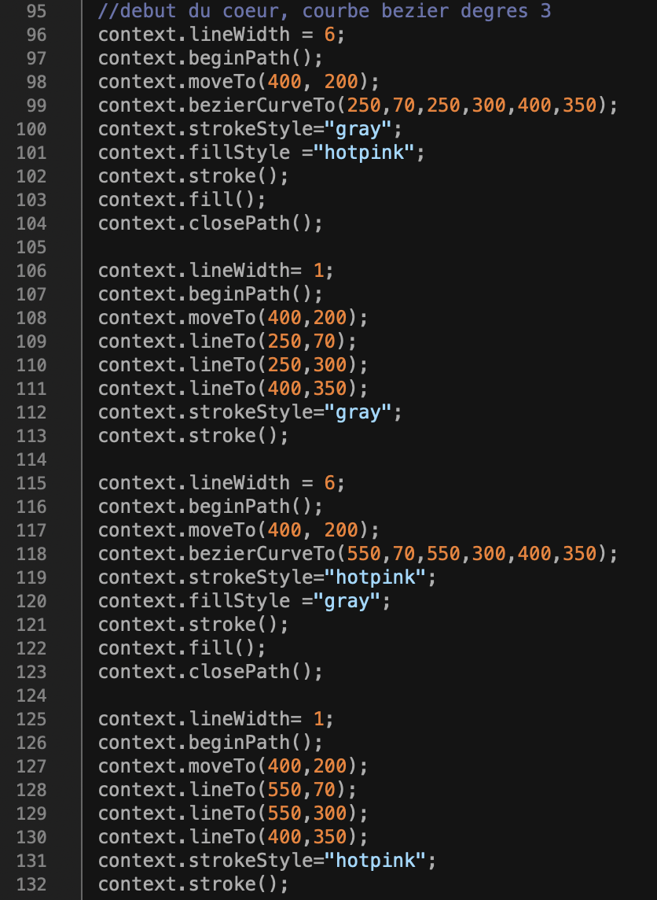
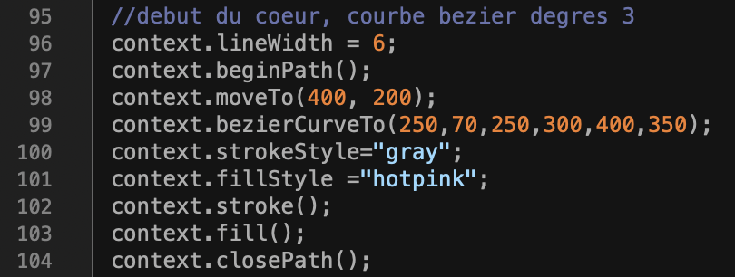

I:
Tout d'abord, nous avons commencé à faire des cercles (ceux présents sur les côtés) grâce à la fonction arc de Javascript,
ensuite nous avons procédé aux rectangles (gris) qui s'apparentent à des lignes, grâce à des successions de traçages
de chemins, points par points.
En ce qui concerne le dessin de la glace. Il faut savoir que nous avons utilisé les courbes de Bézier de degré 2.
Nous avons tout d'abord commencé à tracer la forme du "cône", grâce aux fonctions Javascript permettant de tracer les courbes de Bézier.
Maintenant entrons un peu plus dans les détails:
1. Initialisation du canvas et du contexte.

Les tâches s'effectuent dans l'ordre:
a- Récupère l'élément HTML avec l'ID "canvas".
b- Initialise le contexte du canvas en 2D.
c- Change la couleur de fond du canvas en noir.
2. Dessin de lignes grises sur les côtés.

Cette partie du code dessine deux rectangles gris pour créer des lignes sur les côtés du canvas.
3.Dessin de cercles gris sur les côtés.

Cette partie du code dessine plusieurs cercles gris aux coins du canvas en utilisant la méthode arc() du contexte 2D.
Ici ce n'est que la partie du code que pour un seul cercle, vous comprendrez donc qu'elle se répète au total 10 fois.
À noter que les points servant à positionner les cercles changeront. Par exemple, les points (ligne 25) changent pour le deuxième cercle
pour laisser place aux coordonnées suivantes: (100, 200, 40, 0, Math.PI * 2, false), etc...
4.Dessin de la glace et des boules de glace
Cône:

Cette partie dessine une forme de glace à l'aide d'une courbe de Bézier de degré 2. Le code gère également le contour et le remplissage de cette forme.
Boules de glace:



Et celle-ci s'occupe de dessiner plusieurs boules de glace de différentes tailles et couleurs sur le canvas. Il faut garder en tête que ce n'est qu'un exemple, les autres boules ont le mêne schéma
mais comme les cercles, avec des points de positionnemt différents. De plus, en ce qui concerne le premier étage des boules, en plus d'avoir des points de
positionnement différents, "true" prend la place de "false" afin de tracer des demi cercles et non des cercles entiers.
Nous expliquerons plus loin le choix des points de contrôle.
6.Dessin du cœur

Enfin, cette partie dessine une forme de cœur à l'aide de deux courbes de Bézier de degré 3. Une partie du code gère également le contour et le remplissage du cœur.
Même chose que pour la glace, nous expliquerons les choix des points de contrôle plus loin.
7. Général:
Ces sections utilisent principalement les méthodes du contexte 2D de HTML canvas pour dessiner diverses formes et lignes.
Chaque partie utilise des coordonnées et des paramètres spécifiques pour positionner et styliser les éléments dessinés sur le canvas.
Maintenant passons aux points de contrôle.
II:
Les points de contrôle (également appelés points de contrôle de Bézier) sont des points spécifiques utilisés pour définir la courbe d'une courbe de Bézier.
Ici, les points de contrôle sont utilisés pour créer des courbes de Bézier de degrés 2 et 3, qui sont des courbes de Bézier quadratiques et cubiques respectivement.
1. Courbes de Bézier de degré 3 (Points de contrôle cubiques):
Dans le code, les courbes de Bézier de degré 3 (cubiques) sont définies avec la méthode bezierCurveTo(cp1x, cp1y, cp2x, cp2y, x, y). Cette méthode prend trois paires de coordonnées comme arguments:
(cp1x, cp1y) et (cp2x, cp2y) sont les points de contr&ocric;le pour les courbes de Bézier cubiques. Ils influencent la direction et la forme de la courbe entre le point de départ et le point final.
(x, y) est le point final de la courbe.
2. Courbes de Bézier de degré 2 (Points de contrôle quadratiques):
Les courbes de Bézier de degré 2 (quadratiques) sont définies avec la méthode quadraticCurveTo(cpx, cpy, x, y). Cette méthode prend deux paires de coordonnées comme arguments:
(cpx, cpy) est le point de contr&ocric;le pour la courbe de Bézier quadratique. Il affecte la direction et la forme de la courbe entre le point de départ et le point final.
(x, y) est le point final de la courbe.
3. Exemple:
Dans la partie du cœur:

(250, 70) et (250, 300) sont les points de contr&ocric;le pour la première courbe de Bézier cubique.
(400, 350) est le point final de la courbe.
Ces points de contrôle déterminent la forme précise de la courbe de Bézier dessinée entre le point de départ (400, 200) et le point final (400, 350).
De même, les autres parties du code utilisent des points de contrôle spécifiques pour créer différentes formes à l'aide de courbes de Bézier.
Ces points sont déterminants pour la forme exacte de la courbe et sont positionnés pour obtenir les formes souhaitées pour chaque dessin.
4. Choix:
Le choix des coordonnées des points de contrôle dans les courbes de Bézier est essentiel pour déterminer la forme et la direction de la courbe dessinée.
Ces coordonnées sont définies en fonction de la forme spécifique que l'on souhaite obtenir pour une courbe donnée.
Dans notre cas, pour le cœur, les points de contrôle ont été choisis pour obtenir la forme classique d'un cœur. En modifiant ces coordonnées, la forme du cœur peut être ajustée.
Le point de départ est à (400, 200), et le point final est à (400, 350), permettant ainsi d'avoir une partie supérieure du cœur plus étroite et la pointe en bas.
Les points de contrôle intermédiaires influencent la courbure de la courbe pour obtenir une forme de cœur symétrique et lisse.
De la même manière pour la glace, les points de contrôle ici sont définis pour obtenir une forme de glace triangulaire.
Le point de départ est à (800, 350), le point final est à (1100, 350), et le point de contrôle est à (950, 500), ce qui crée une courbe qui monte et redescend pour former la pointe de la glace.
5. Conclusion:
Les autres parties du code utilisent des courbes de Bézier pour dessiner des éléments tels que des cercles, des lignes et d'autres formes.
Les coordonnées pour ces courbes ont été spécifiéés pour placer ces éléments à des emplacements spécifiques sur le canvas, en ajustant les rayons, les angles et les positions pour obtenir l'apparence souhaitée.
En résumé, les coordonnées des points de contrôle dans les courbes de Bézier ont été choisies de manière précise pour obtenir les formes désirées pour chaque élément dessiné.
Elles sont ajustées et positionnées de manière à obtenir les contours et les formes spécifiques voulus pour chaque partie du dessin.
Ces valeurs sont déterminées par la conception artistique ou graphique que le développeur a souhaité réaliser dans le code.